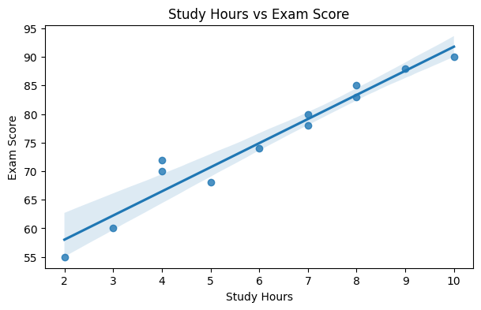

Data Visualization

Analysis: The chart displays a strong positive correlation between time spent studying and the resulting exam score. Based on this data, I would recommend students aim for at least 7 hours of study to improve their chances of scoring above 80%.